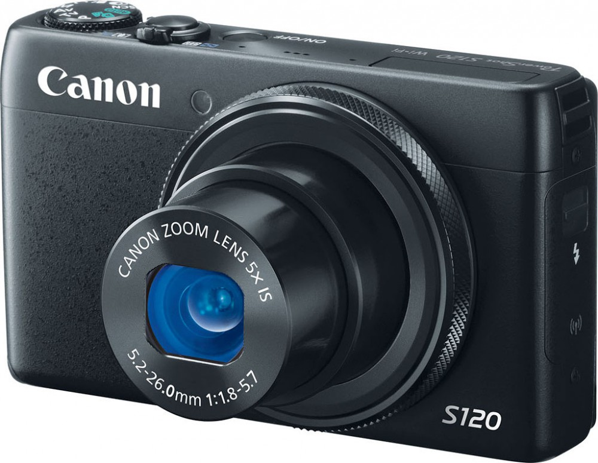
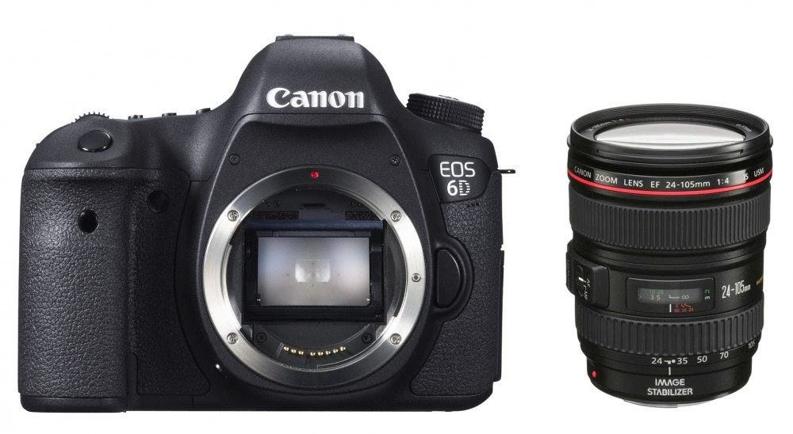
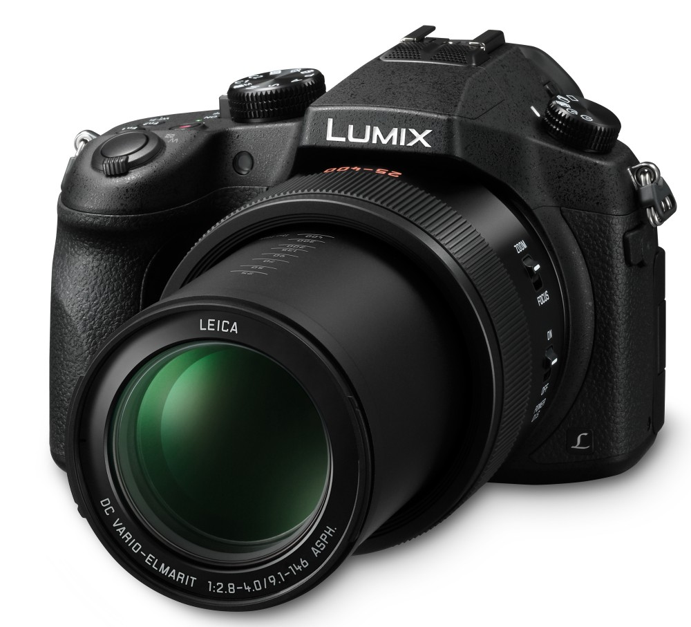

Fotografiecursus voor beginners
Marc Duiker
Introductie
Wie ben ik?
- Fotografieliefhebber sinds m'n 17e
- Alphoto
- STA-ART
- Workshops & cursussen
Wie ben jij?
- Wat is je fotografie ervaring?
- Wat vind je leuk?
- Wat wil je leren?
Cursus
Les 1
Camera's & Fotografieplan
Les 2
De camera & belichting
Les 3
Ingrediënten voor
een goede foto
Les 4
Thema's
Les 5
Praktijkles
Les 6
Eindopdracht
Lessen
- Camera's & Fotografieplan (di 4 okt)
- De camera & belichting (di 11 okt)
- Ingredienten voor een goede foto (di 25 okt)
- Thema's (di 8 nov)
- Praktijkles (za 19 / zo 20 nov)
- Eindopdracht (di 6 dec)
Praktisch
- Korte pauze
- Koffie/thee 80 cent
- Telefoon stil
- Stel vragen!
Soorten camera's
Compact camera
Spiegelreflex camera
Bridge camera
Systeem camera


Bron: Anuskafm, CC BY-SA 3.0
Automatisch
vs
Controle
Scherptediepte
Diafragma

Bron: Hanabi123, CC BY-SA 2.5


Controle over belichting
Weg met de Auto stand
We gaan fotograferen in de diafragmavoorkeur stand (Av / A op de camera)
Opdracht: Diafragmavoorkeur
Zoek in een groepje van 2 of 3 uit hoe de A/Av stand stand werkt.
Fotografieplan voor eindopdracht
Eindopdracht
- Onderwerp moet je zelf verzinnen.
- Resultaat bespreken tijdens laatste les.
- Doel is om tijdens het uitvoeren vd opdracht de kennis in de praktijk toe te passen.
Maak een foto in het thema waarin je beter wilt worden
Fotografieplan voor eindopdracht
- Wat wil je bereiken?
- Hoe kom je daar?
Deze cursus
- Uitleg over de techniek
- Uitleg over compositie, licht ...
- Huiswerk
Zelf doen!
Veel foto's maken buiten de les uren.
Plannen, uitvoeren, bijstellen
Huiswerk
Zoek een voorbeeldfoto die je wilt 'namaken'
Online bronnen om foto's te zoeken
Magazines om foto's in te zoeken
- Zoom.nl
- Focus
- Fotografie
Vragen / opmerkingen / huiswerk
marcduiker@gmail.com